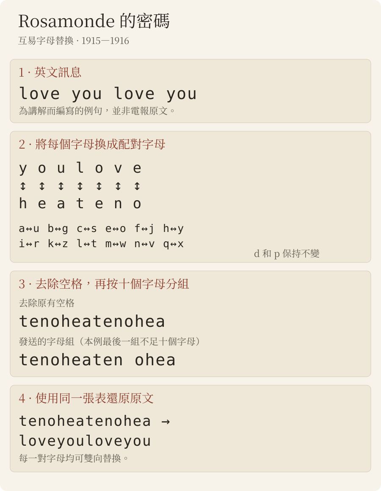

新發現
羅莎蒙德電報
1915和1916年，日本當局抄錄了二十二封由無意義單詞組成的電報——heaitolloi、coohavbhea、tenocrszqu——收件人是在上海或東京的「Rosamonde」（羅莎蒙德）。這些電報一直躺在檔案裡，沒有譯文。它們其實是英文，用簡單的字母替換加密。就我們所知，這是孫中山與宋慶齡（「Rosamonde」）之間直接往來、現存最早的訊息，比兩人結婚早八個月。

檔案
1913至1917年間，日本遞信省通信局為外務省系統地抄錄了流亡東京的孫中山身邊人員收發的電報。這些抄件構成「特定人ノ発受郵便物取調」系列，藏於外務省外交史料館，並由日本亞洲歷史資料中心（JACAR）數位化。
1915年的兩卷（JACAR B03050087600 與 B03050087700）中，除漢字電碼電報外，還有另一類電報：十個字母一組的單詞，輔音和元音毫無規律地交錯，某些字母組反覆出現（hea、lyu、ound）。它們以頭山滿（孫中山的鄰居和庇護者）的名義從東京發往上海的兩個地址——「Laisaosang, 445 Chaoufoong Road」與「Rosamonde, 628 E. Yuhang Road」；1916年則往來於上海與「Rosamonde Tokio」之間。抄件均無譯文。

加密系統：英文，逐字母替換

明文是電報體英文，去掉空格，再切成十個字母一組。每個字母換成它在一張互換對照表中的搭檔：加密和解密用的是同一張表。
a↔u b↔g c↔s e↔o f↔j h↔y i↔r k↔z l↔t m↔w n↔v q↔x — d、p 不變
因此 you 寫作 hea，love 寫作 teno——1915年3月幾封發給 Rosamonde 的明文電報，落款就是「teno」。人名、數字和回電地址保留明文（「Inuzuka」、「100000」）。

1915年2月至7月
按原文照錄，包括電報縮寫（ye 即 you，Yoko 即橫濱）；方括號內為更正（抄寫混淆）或補出的字母；「……」為未讀出的部分。2月21日那封中，單詞 happy 未加密，夾在密文中間。中文為我們的譯文。
| 日期 | 發 → 收 | 解讀文本 |
|---|---|---|
| 17/2/1915 | 東京 → Laisaosang 孫中山 → 宋慶齡 | Your letter [o]f the eight received. My life is [s]afe agai[n], I [ha]ve to thank you. Did you get my l[a]st cable?收到你8日的信。我的生命又安全了，我要感謝你。你收到我上一封電報了嗎？ |
| 20/2/1915 | 東京 → Rosamonde, 628 E. Yuhang Road（署名「Hata」） 孫中山 → 宋慶齡 | Must an[s]wer cable to Chu's yesterday. HATA須回覆昨天發到朱處的電報。 |
| 21/2/1915 | 東京 → Laisaosang 孫中山 → 宋慶齡 | I am so happy, tha[n]k[s] to you.我太幸福了，多虧了你。 |
| 23/2/1915 | 東京 → Laisaosang 孫中山 → 宋慶齡 | Yes, I'll save you or die myself if fail. But you must b[e] strong too.是的，我會救你；若失敗，我寧可自己死去。但你也必須堅強。 |
| 25/2/1915 | 東京 → Laisaosang 孫中山 → 宋慶齡 | With de[vou]t love I ask ye to throw of[f] Yung at once. If not I will surely die. I could throw of[f] … and sacrificed 100000 yu[a]n for you. Why are you [t]roubl[e] over a house a[n]d automobile? Now the [q]ues is: are you go[i]ng to cut h[i]m?懷著虔誠的愛，我請你立刻擺脫 Yung。否則我必死無疑。我能擺脫……，並為你犧牲十萬元。你為何為一棟房子和一輛汽車煩惱？現在的問題是：你會和他斷絕嗎？Yung：宋慶齡的一位求婚者，可能是她父親中意的人選；其中文姓名不詳（見下文）。 |
| 26/2/1915 | 東京 → Laisaosang 孫中山 → 宋慶齡 | Whenever ye see Yung you inflict tor[t]ure [u]pon me, and the [p]ain will surely react on you more i[n]tens[e], for our souls are mingled i[n]to one. You can't esca[p]e.每當你見 Yung，就讓我受盡折磨，而這痛苦必將更強烈地落回你身上，因為我們的靈魂已融為一體。你逃不掉的。 |
| 3/3/1915 | 東京 → Laisaosang 孫中山 → 宋慶齡 | Thirst[y] for hearing from you. An[s]wer.渴望你的消息。回覆。 |
| 1915年3月6日 | 東京 → Laisaosang 孫中山 → 宋慶齡 | I a[pp]rehend you going to desert me. Is it true? Tell definitely once for all to me. I shall a[pp]reciate you more for the honesty.我擔心你要離棄我。是真的嗎？請一次說清楚。你若坦白，我會更敬重你。 |
| 1915年3月7日 | 東京 → Laisaosang 孫中山 → 宋慶齡 | Why not give me comforts?為何不給我安慰？ |
| 9/3/1915 | 東京 → Laisaosang（30字） 孫中山 → 宋慶齡 | [J]oy and ho[p]e return to me with your cable yes[ter]day. Many tha[n]k[s]. I just goin[g] … I a[m] well and sound usual. E[x]ecu[t]e your agreement at once, I b[i]d you [e]agerly. Your father su[r]prised me by a cal[l] t[h]is morni[ng].（中間一段未能讀出）你昨天的電報讓我重拾喜悅和希望。多謝。我正要……我一如往常，身體健康。請立即履行你的約定，我熱切地請求你。今早你父親來訪，讓我很意外。 |
| 11/3/1915 | 東京 → Laisaosang 孫中山 → 宋慶齡 | What make ye cabled me so urgent yesterday? Re[p]ly by ci[p]her. Must write it at home, never do it in office, for [t]hey see. You don't use code book, so they can get our secrets by guessing. Write me often, [p]lease do.你昨天為何如此緊急地來電？用密碼回覆。務必在家裡寫，切勿在辦公室寫，因為他們會看見。你不用密碼本，所以他們能猜出我們的秘密。請常給我寫信。 |
| 12/3/1915 | 東京 → Laisaosang 孫中山 → 宋慶齡 | Shall I tell father that you coming by Korea? Answ[er].要告訴你父親你搭「高麗號」來嗎？回覆。 |
| 15/3/1915 | 東京 → 「Miss Nit」，「高麗號」輪船（無線電） 孫中山 → 宋慶齡 | Who coming with you? Do father know when to meet ye? Are you land Kobe or Yoko? Re[p]ly [q]uick so that I may know what to do for your landing. Love.誰和你同來？你父親知道何時去接你嗎？你在神戶還是橫濱上岸？速覆，好讓我安排你上岸的事。愛你。 |
| 10/6/1915 | 東京 → Laisaosang 孫中山 → 宋慶齡 | Are you forgot me? Why not write and se[n]d the [p]hoto?你忘了我嗎？為何不寫信，也不寄照片來？ |
| 7/7/1915 | 上海 → Rosamonde, Tokio 宋慶齡 → 孫中山 | Lovesick … in torture. Be merciful. Come or free me forever.相思成疾……備受折磨。請發慈悲：要麼來，要麼永遠放我走。 |


1916年5月

1916年4月，孫中山離開日本，到上海領導反袁起義；已成為他妻子的宋慶齡起初留在東京。同一密碼隨即再次出現（這些電報是在找到密鑰之前盲讀轉錄的）：
| 日期 | 發 → 收 | 解讀文本 |
|---|---|---|
| 1/5/1916 | 長崎 → Rosamonde, Tokio 孫中山 → 宋慶齡 | [In]te[n]s[e] love a[n]d ma[n]y k[is]ses to you.熾烈的愛，給你許多吻。 |
| 4/5/1916 | 上海 → Rosamonde 孫中山 → 宋慶齡 | Safel[y] la[n]d Fre[n]ch concess[i]on yesterday, no[w] very busy now. Love from devoted husba[nd].昨日在法租界平安登岸，現在非常忙。忠誠的丈夫寄上愛意。 |
| 8/5/1916 | 東京 →「Junzaburo」，上海（電報單署名「中山」） 宋慶齡 → 孫中山（推斷） | [I]s [i]t true y[o]u are going to Canton soon?聽說你即將去廣州，是真的嗎？ |
| 10/5/1916 | 上海 → Rosamonde 孫中山 → 宋慶齡 | [I] not go to Canton. You can come here an[y] t[i]me, b[u]t do[n]'[t] take iro[n] trunk, leave [i]t to Mr Inuzuka's care. Do you understand?我不去廣州。你隨時可以來這裡，但不要帶那隻鐵箱，把它交給犬塚先生照管。明白嗎？ |
| 11/5/1916 | 上海 → Rosamonde 孫中山 → 宋慶齡 | D[a]rl[ing], have you [r]eceive cable a[sk] [y]ou to come he[r]e a[n]d do you know that iron trunk mus[t] be g[i]ve[n] to M[r] Inuzuka to take care. Love a[n]d k[is]ses to m[y] own w[i]f[e].親愛的，你收到要你來這裡的電報了嗎？你知道那隻鐵箱必須交給犬塚先生照管嗎？給我的妻子愛與吻。 |
| 12/5/1916 | 上海 →「Nakayama, 109 Harajuku, Tokio」 孫中山 → 宋慶齡 | Cha[ng] K[i] [r]etur[n] Tok[i]o [i]s not true. D[i]d y[o]u [re]ceive two former ca[bl]es ask you to come back a[n]d g[i]ve the iro[n] tru[n]k [to] M[r] Inuzuka's [c]are? Have y[ou] done so? Fo[r] [I] [a]m very [anxi]ous about the t[r]unk, fo[r] [i]t [i]s ve[ry] d[an]ge[r]ou[s] fo[r] [y]ou to take [i]t yourself. Do [y]o[u] [q]uite cl[e]a[r] w[h]at [I] mea[n]? A[ns]wer at once. Husb[and]. address Murai 317 JoffraChang Ki（張繼？）回東京一事不實。我前兩封電報要你回來，並把鐵箱交給犬塚先生照管，你收到了嗎？照辦了嗎？我非常擔心那隻箱子：你親自帶著它非常危險。我的意思你完全明白嗎？請立即答覆。夫。地址：Murai，317 Joffre。 |
| 13/5/1916 | 東京 →「Junzaburo」，上海（電報單署名「中山」） 宋慶齡 → 孫中山（推斷） | [Pl]ease tell [T]ai h[i]s w[i]fe com[in]g also. Rosamonde. Porthos.請告訴 Tai（戴季陶？）：他的妻子也同來。Rosamonde。Porthos（船名）。 |
方括號內的字母：電報單上寫法不同或漏寫的字母；2026年10月15日對照圖像的複核證實，這些是電報單本身的錯誤，而非讀法之誤。電報員常把 v 寫成 n、r 寫成 i、h 寫成 y——這是手寫草體的混淆（這些字母在摩斯電碼中並不相似）。5月4日和12日電報中 husband 的詞尾缺失，是因為最後一個密語單詞只到十個字母為止。與1915年一樣，有幾個詞以明文保留：Inuzuka、iron、trunk、know、own，以及5月13日的 Rosamonde 和 Porthos。每張電報單上所記的字數（連同地址）與抄錄的字組完全相符：沒有缺詞。
這些電報彼此呼應，並與電報全文頁上的漢文電報相互印證：
- 廣州。5月8日，從孫中山在東京的住所（電報單署名「中山」，地址原宿）發出：“Is it true you are going to Canton soon?”（聽說你即將去廣州，是真的嗎？）10日，孫中山答覆：“I not go to Canton.”（我不去廣州。）
- 張繼。5月11日，同一住所發出的一封漢文電報問：「聞張繼已回日，頗奇，是否？」（0042b）。12日，孫中山用加密英文答覆：“Chang Ki return Tokio is not true.”（張繼回東京一事不實。）
- 鐵箱。5月10、11、12日，孫中山一再叮囑：她不可親自攜帶那隻 iron trunk（“very dangerous”），而應交給犬塚信太郎。12日，東京一封漢文電報答覆：「箱已交犬塚，十五日附法船來。若有要事，請電如下：Mrs …, steamer Porthos。請派二人接，因行李甚多。」其中「Mrs …, steamer Porthos」一段是用Rosamonde密鑰加密的英文（0045a）。
- 啟程。5月13日東京來電：“Please tell Tai his wife coming also. Rosamonde. Porthos.” Porthos 應是法國郵船公司（Messageries Maritimes）的同名郵輪；「Tai」或為戴季陶，他在1917年的電報中署名「Tai」。宋慶齡於1916年5月19日抵達上海，與孫中山會合[3]。
誰寫給誰？
「Rosamonde」（或「Rosamond」）是宋慶齡的英文名；「Rosamonde Tokio」是1916年孫中山家中的電報掛號之一。多項相互獨立的事實，都與孫中山（在東京）和宋慶齡（在上海）之間的通信相吻合：
- 日期。宋慶齡於1914年10月28日離日返回上海家中，直到1915年3月17日才再到日本[3]。東京發往上海的電報從2月17日持續到3月12日；3月15日那封則以無線電發給載她返日的「高麗號」輪船：“Are you land Kobe or Yoko?”（你在神戶還是橫濱上岸？）。她於5月3日再度返滬；6月10日電報又起。7月7日，“Lovesick … in torture…”從上海發往「Rosamonde, Tokio」：這個掛號此時為孫中山家所用，這封電報應是宋慶齡的回電。
- 中轉地址。1915年2月2日和4日，孫中山派往上海的朱卓文（當時拼作「Chu」）寫信給他：已在自家隔壁佈置一間房作宋小姐的「辦事處」——以教其女兒英文為名——「以避他母之疑眼」，孫可照此地址直接與宋通信[2]。2月20日，東京來電：“Must answer cable to Chu's yesterday.”（須回覆昨天發到朱處的電報。）
- 1915年3月的傳言。3月9日，上海發出三封明文電報：“wire health condition”、“wire Toyama's true conditions immediately”，以及發往「Rosamonde, Tokio」的“Is recovery hopeless? If not will execute agreement. Reply urgent. Teno”（是否已無望康復？若否，將履行約定。速覆。愛）——teno 就是加密後的 love。當晚，東京以密碼回電：“I am well and sound usual. Execute your agreement at once, I bid you eagerly.”（我一如往常，身體健康。請立即履行你的約定。）次日，孫中山又用一種完全不同的密碼（壓縮漢字電碼）詢問上海：上海近日有何謠言關[於]弟自[身]安寧者否？請覆，並[囑]同人勿信。文。兩個互不相干的系統講述的是同一件事。3月11日，上海一封明文電報說：“Leaving zego by Korea, coming, father await”——zego 就是加密後的 Kobe（神戶）。
- 「Yung」是誰？宋慶齡的一位求婚者，中文姓名不詳。除這些電報外，據我們所知，他只見於宋嘉樹（查理·宋）1915年8月3日致孫中山的英文覆函：一位「Yung」（楊天石譯作「永」）和一位「Dan Chung」（丹純）常來拜訪他的女兒，但她並未表示願嫁其中任何一人；按孫中山的要求，孫的來信和 Yung 的信都已燒掉。公佈此函的歷史學家楊天石認為，Yung 可能是宋嘉樹較中意的人[2]。這些電報早在五個月前、1915年2月就提到他：25日孫中山要求“throw of[f] Yung at once”（立刻擺脫 Yung），並問“are you go[i]ng to cut h[i]m?”（你會和他斷絕嗎？）；26日又寫道“Whenever ye see Yung you inflict tor[t]ure [u]pon me”（每當你見 Yung，就讓我受盡折磨）。
- 保密。據宋慶齡本人回憶，她負責保管孫中山的密電碼[3]。3月11日的電報給出了保密指示：在家裡加密，切勿在辦公室；沒有密碼本的密碼可能被人猜破。
- 1916年。1916年5月的電報署名“devoted husband”（忠誠的丈夫），收件人是“my own wife”（我的妻子）；內容與孫中山抵滬（登岸、法租界）及其已知的身邊人物（犬塚信太郎）相符。
「Laisaosang」這一掛號背後是誰，以及 Yung 的中文姓名，目前仍不清楚。
我們如何確認
- 轉錄。電報單依據 JACAR 掃描件（200 dpi）讀出，兩次且彼此獨立：先由 Claude 讀，再由 Brice Dudout 逐行盲讀，既看不到第一次的讀法，也看不到明文（字母一致率 89%）。1916年5月的電報是在找到密鑰之前盲讀轉錄的。發表的文本逐詞採用英文更通順的那一讀；兩種讀法均予保留。
- 統計。字母重合指數（0.062）與自然語言相符，而不像加密電碼；f 和 q 從未出現；三字母組 hea 出現十次。
- 尋找密鑰。先在全部26字母替換表中、再僅在互換表中做模擬退火，以英文四字母組模型評分；用隨機密鑰加密的英文文本作對照，可百分之百復原。
- 樣本外驗證。僅從1915年電報（Claude 的讀法）得出的密鑰，可以讀出1916年盲讀的轉錄：得分 −5.97，而2000張隨機互換表為 −8.01 ± 0.27（最佳 −6.93），即 z = 7.5。它同樣能讀出 Brice Dudout 對1915年電報的盲讀：−5.27 對 −8.02 ± 0.25（最佳 −6.87），z = 10.9。另一系統的電報（1916年3月3日）則仍不可讀（z = 0.6）。
- 校訂。把每個讀出的單詞與所擬明文應得的密文對比：差異僅限於抄寫員草書中常見的混淆（n/v、i/r、g/p、a/u、e/c，字母重寫或漏寫）。
尚存的不確定之處
- 1915年最初樣本的十一封完整電報中，750個字母約有45個經過更正（6%），幾乎都是抄寫混淆。仍不確定的有：3月9日中間八個單詞；2月25日的一個詞（「throw of[f] ……」）和「de[vou]t」的詞尾；7月7日的一個字母組；1916年電報中的兩個人名：「Chang Ki」（張繼？）和「Tai」（戴季陶？）；方括號內的字母已對照圖像核實，屬電報單本身的錯誤。
- 發報人與收報人的認定依靠多方印證：電報單上沒有他們的名字。
- 在關於1916年截抄電報的研究[1]、關於孫宋婚姻的史學研究[2, 3]以及 J. Chang 與 J. Halliday 的傳記[4]中，我們都沒有找到這些電報。其他著作仍待查核。
資料來源
- D. Bourdeau, Sun Yat-sen's circle on the wire, 1916–17，「Unsolved Historical Ciphers」登記冊，2026（CC BY 4.0）。
- 楊天石，〈宋嘉樹與孫中山、宋慶齡的婚姻——讀宋嘉樹復孫中山英文函〉，《百年潮》2001年第12期。
- 朱玖琳，〈從檔案文獻看孫中山與宋慶齡的婚姻〉，《近代中國》第25輯，2016年，第50–70頁。
- J. Chang, J. Halliday, Mme Sun Yat-sen (Soong Ching-ling), Penguin, 1986.
- JACAR，外務省記録 1.6.1.4-2-1-2「特定人ノ発受郵便物取調」，第1卷：B03050087600（1915年1月8日–3月11日）、B03050087700（1915年3月–1916年2月）；第3卷：B03050089000（1916年4月29日–5月22日）。